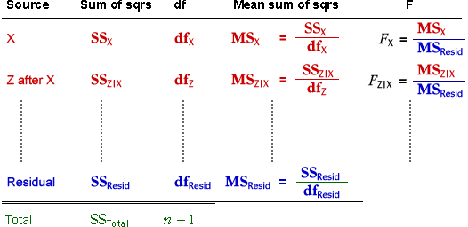
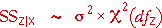
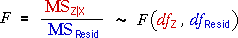

Extending the sum of squares table
In order to perform hypothesis tests, the sums of squares table is extended with extra columns. In this form, it is known as an analyis of variance (or anova) table.

Distributions
Provided the full model with all explanatory variables fits the data, the residual sum of squares has a chi-squared distribution,
Each sequential sums of squares may also have a chi-squared distribution, but only if the parameter for this variable and all subsequent variables are really zero. For example, the sequential sum of squares for Z after X has been added to the model is:

If the parameter for Z is non-zero but the parameters for subsequent variables are zero, the sequential sum of squares will be larger. Large sums of squares therefore suggest that a variable is important (provided subsequently added variables have zero parameters).
Testing
Since the ratio of two chi-squared variables, each divided by its degrees of freedom, has an F distribution, if a variable is unimportant (parameter zero), its F ratio will have an F distribution,

The observed F ratio in the anova table can be compared to the upper tail of this distribution to get a p-value.
Order of testing
Since the F ratio for a sequential sum of squares only has an F distribution if that variable and all subsequently added variables in the anova table are unimportant (zero parameters), you should not try to interpret any F ratio if terms below it on the table are important.
Always work up from the last variable added and stop trying to interpret the F-ratios and p-values when you reach a term that is significant.
This will be clearer in examples.
Effect of ancestors on height
The anova table below shows the effects of birth length, parents' height at age 18 and grandparents' height at age 18 on the heights of a group of men when they reached age 18.
Since grandparents' height is the bottom sequential sum of squares, we can directly interpret its p-value. An F-ratio as high as 0.44 would occur by chance with probability 0.7791 (its p-value). We would conclude that grandparents' height has no additional explanatory power if parents' height and birth length are already in the model.
With the initial ordering in the anova table, the p-value for parents' height is very low, so we conclude that it is almost certain that parents' height is important in the model for the mens' heights. (We can continue up the table since the bottom term is not important.)
Drag the red arrow for Parents to make it the top item in the table. With this order of terms, we can interpret the p-value for birth length. Since the p-value for Birth after Parents is 0.0162, we conclude that there is fairly strong evidence that Birth is important, even when Parents is in the model.
Etch rate
In this example, all four explanatory variables are uncorrelated with each other. This greatly simplifies interpretation of the anova table since all sums of squares (and hence F ratios and p-values) stay the same when the order of adding the variables changes.
From the p-values, we conclude that: